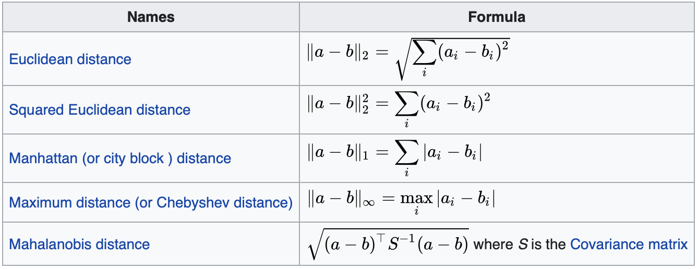
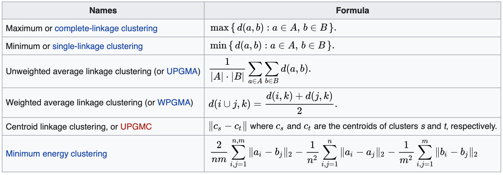

Hierarchical clustering can be top down (start with one cluster that will be split) or bottom up (start with clusters with one data point that will be merged).
It will recursively merge (or split) clusters using a given metric distance and a given. Both are hyperparameters of the algorithms.
The output is a dendrogram that can be cut anywhere depending on the desired number of clusters:
Depending on the cut value, the number of clusters obtained will be different. For example cutting at 30 will give two clusters but cutting at 10 will give 3 clusters.


See: